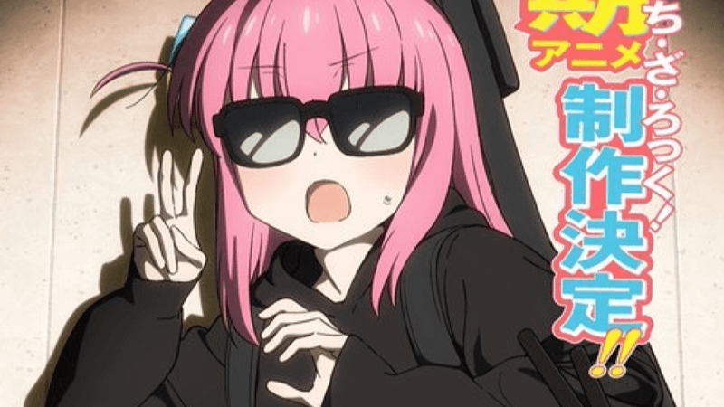

Bocchi The Rock!
2º filme de recapitulação de BOCCHI THE ROCK! ganha novo trailer

Demon Slayer continua a conquistar corações ao redor do mundo, e agora os fãs da série têm mais um motivo para celebrar: a tão aguardada versão especial do Arco Distrito da Luz Vermelha será exibida no Japão, trazendo novos conteúdos e experiências emocionantes para os fãs da popular franquia. A versão especial do Arco Distrito da Luz Vermelha promete adicionar cenas inéditas, expandindo ainda mais a história que já conquistou os fãs na adaptação original. O arco, que foi um dos mais aclamados da série, segue o protagonista Tanjiro Kamado e seus amigos enquanto enfrentam novos e poderosos inimigos no Distrito da Luz Vermelha. Com a ajuda da Hashira da Chama, Kyojuro Rengoku, e outros personagens essenciais, o grupo enfrenta uma batalha intensa contra os demônios, levando a uma das sequências de ação mais emocionantes da história de Demon Slayer. Agora, os fãs terão a oportunidade de revisitar esse arco com um toque especial. A nova versão incluirá novas cenas, incluindo sequências de ação aprimoradas e momentos emocionais que não foram vistos na primeira exibição do arco. A produção também promete uma qualidade de animação ainda mais impressionante, com os estúdios Ufotable, conhecidos pela excelência em suas produções, proporcionando um espetáculo visual de tirar o fôlego. Além das cenas inéditas, a versão especial contará com um material adicional que expandirá o universo de Demon Slayer. Os fãs poderão mergulhar ainda mais nas histórias e motivações dos personagens, aprofundando a compreensão sobre o passado e as relações dos caçadores de demônios. Há também a expectativa de que novos detalhes sobre os Hashiras e o mistério por trás dos demônios sejam revelados, o que deve manter os fãs ansiosos por cada episódio. O Arco Distrito da Luz Vermelha é um dos favoritos dos fãs por sua profundidade emocional, com momentos marcantes como a luta de Tanjiro contra o demônio Daki e a dramática batalha contra o demônio Gyutaro, que desafiaram tanto os heróis quanto os espectadores. Com a versão especial, a série promete não apenas relembrar esses momentos, mas também adicionar mais camadas à já emocionante narrativa. A data de estreia da versão especial ainda não foi totalmente definida, mas os fãs podem esperar por uma exibição nos cinemas japoneses antes de ser disponibilizada em plataformas de streaming. A expectativa é que essa versão atraia tanto os fãs de longa data quanto novos espectadores, ansiosos para vivenciar Demon Slayer de uma maneira ainda mais rica e intensa. Com o lançamento dessa versão especial, Demon Slayer mais uma vez reafirma seu lugar de destaque no cenário dos animes, mantendo sua popularidade nas alturas e provando que a história de Tanjiro Kamado e sua luta contra os demônios tem muito mais a oferecer. Prepare-se para um espetáculo visual e emocional com a versão especial do Arco Distrito da Luz Vermelha, que certamente será um dos destaques da temporada.
2º filme de recapitulação de BOCCHI THE ROCK! ganha novo trailer

Bartender Glass of God divulga novo trailer e confirma data de estreia
Trilogia de filmes Demon Slayer: Kimetsu no Yaiba Castelo Infinito é anunciada